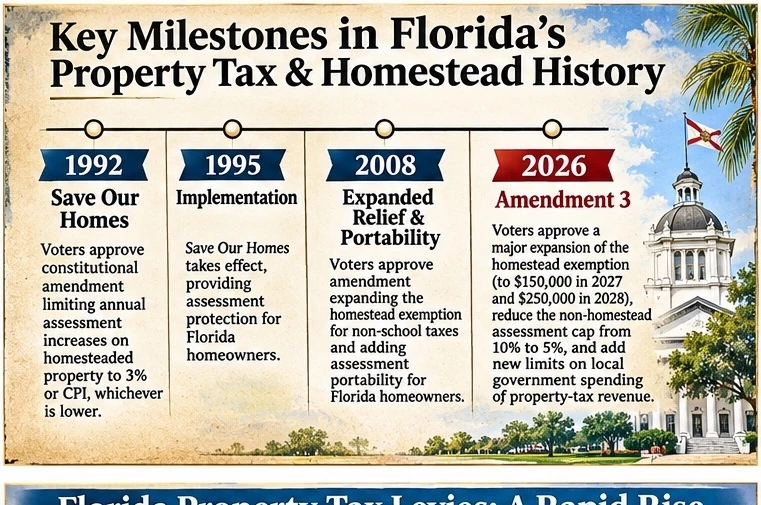
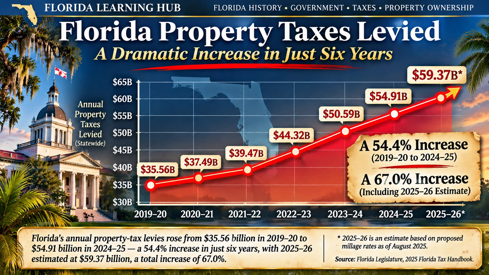

Today in Florida History · Special Edition · November 5, 2026
Florida Voters Rewrite the Homestead Tax Rules: A History from 1868 to 2026
By Wm. E. McMullen II · © 2026
Election note: The results cited here are unofficial as of November 5, 2026. State certification is pending.
Florida Learning Hub | Special Edition | November 4, 2026
Election update: As of November 4, the Associated Press projects passage; official certification remains pending. Statewide revenue figures are taxes levied, not necessarily collected. The 2025–26 fiscal-year figure in the historical series is an estimate.
On November 3, 2026, Florida voters considered Amendment 3, a constitutional change that increases the homestead exemption for non-school property taxes and reduces the assessment-growth cap for certain non-homestead properties. As of publication on November 4, the Associated Press has projected that Amendment 3 passed, a result also reported by WUSF and other Florida news organizations. Florida Election Watch identifies its election-night returns as unofficial, and final state certification remains pending. The measure required approval from at least 60% of voters casting ballots on it.
The result arrives after years of sharply rising property values and statewide property-tax levies. The debate is not merely whether homeowners should receive relief. It is about how Florida distributes the cost of government among longtime residents, recent purchasers, businesses, schools, and communities with different tax bases.
From territorial land taxes to the homestead exemption
Florida's property-tax story predates statehood. The Florida Legislature's 2025 Florida Tax Handbook traces territorial property taxation to 1839, when land was taxed by acreage and quality. The handbook also documents how the 1885 Constitution required uniform taxation and just valuation, while allowing particular exemptions. A constitutional $5,000 homestead tax exemption followed in 1934. This is distinct from Florida's older homestead protection against certain forced sales: creditor protection and tax exemption are related ideas, but different legal mechanisms.
The first homestead protection was not a tax break: 1868
Florida's homestead tradition has two separate starting points. The 1868 state constitution protected a qualifying family homestead against forced sale to satisfy many ordinary debts. That safeguard mattered in an agricultural society where a failed crop, business obligation, or court judgment could threaten the family residence. But it did not make the homestead tax-free. Property taxes and assessments remained exceptions to the protection. The Florida Supreme Court later emphasized this distinction in Osterndorf v. Turner (1983): protection from forced sale had existed since 1868, whereas the homestead property-tax exemption arrived much later. [Historical source: Florida Supreme Court, Osterndorf v. Turner; Florida Constitution, Article X, section 4.]
For pioneer families, land was often simultaneously a home, workplace, store of wealth, and source of food. Homestead protection recognized that the loss of the dwelling and land could imperil an entire household. Yet a family that could not pay taxes was not necessarily protected from a tax-related sale. That vulnerability helps explain why the Depression-era tax amendment represented a distinct second chapter in Florida's homestead history.
November 6, 1934: the actual beginning of Florida's homestead tax exemption
Florida voters first approved the constitutional homestead property-tax exemption on November 6, 1934. This is the date the modern tax-exemption story begins—not 1868, not 1992, and not 2008. During the Great Depression, many owners faced declining incomes while property-tax obligations continued. According to the Sarasota County Property Appraiser's historical account, State Representative Dwight Rogers of Fort Lauderdale advanced the measure through the Legislature in 1933, leading to the 1934 statewide vote. The original amendment exempted up to $5,000 of qualifying homestead value from ad valorem taxation, while leaving special-benefit assessments outside the exemption. [Sources: Florida State University College of Law, 1934 constitutional amendment text; Sarasota County Property Appraiser, homestead history.]
The $5,000 amount may sound small today, but its meaning must be read in the context of 1930s home values and incomes. Crucially, it was a reduction in the taxable assessed value, not a $5,000 payment to the homeowner and not a guarantee that every homeowner owed zero tax. If a qualifying home had an assessed value of $4,000, the exemption could cover that assessed value; if it was assessed at $8,000, the exemption could leave $3,000 exposed to applicable ad valorem taxes, subject to the law and other taxing rules. Special assessments could still be due.
The original language was narrower than today's familiar concept of a permanent-residence exemption. It applied to a head of family who was a citizen and resident of Florida. This excluded some people who lived and owned homes in the state. In 1935, the Florida Supreme Court confronted that limitation in Steuart v. State ex rel. Dolcimascolo, a case involving a resident who was not a United States citizen. The history is a reminder that the right to claim the exemption—and the definition of a qualifying homeowner—changed over time. [Sources: 1934 amendment text; Steuart (1935); Garcia v. Andonie (Florida Supreme Court, 2012).]
1935 and 1939: implementation and broader eligibility
The amendment was adopted in November 1934, and its practical operation began with the following tax period. The 1935 Legislature established procedures for claiming the exemption. An opinion in the Florida Attorney General's 1935 biennial report made clear that the new protection did not retroactively wipe away taxes from 1932, 1933, or 1934. That distinction matters when assigning an exact start date: 1934 was voter approval; 1935 was the first implementation period. [Sources: L'Engle v. Forbes (1955), discussing the 1935 implementing law; Florida Attorney General, 1935 biennial report.]
Voters then revised the constitutional provision in 1938, with the new wording applying for the 1939 tax year and afterward. Instead of the original head-of-family citizenship language, the revised text centered on people holding legal or beneficial title who made the property their permanent home—or the permanent home of a legally or naturally dependent person. The Florida Supreme Court traced this change in Garcia v. Andonie (2012). It is historically inaccurate to treat the original 1934 eligibility rule as though it remained unchanged throughout the century. [Sources: Florida State University College of Law, 1938 constitutional amendment text; Garcia v. Andonie.]
1940 and 1968: who levies the tax?
A further constitutional change in 1940 prohibited state-level ad valorem taxes on real and tangible personal property. This helps explain an often-confusing feature of a modern Florida tax bill: property taxes principally fund local governments and districts, not a statewide real-property tax collected for Florida's general state government. Counties, cities, school districts, and certain special districts can each have different millage rates and responsibilities. The 1968 Florida Constitution carried forward the homestead tax exemption and reorganized its constitutional placement in Article VII, section 6. [Source: Florida Legislature, Florida Tax Handbook, historical milestones.]
1980–1982: from $5,000 to $25,000
The next major expansion came in 1980, amid concern about inflation and rising assessments. Florida voters approved a $25,000 exemption for school-district property taxes in a March 1980 election. In a separate October 7, 1980 vote, they approved a phased increase for non-school levies: $15,000 for 1980, $20,000 for 1981, and $25,000 for 1982 and thereafter, subject to the constitutional and statutory conditions of the period. The Florida Supreme Court recounted the sequence in Osterndorf v. Turner (1983). [Sources: Florida State University College of Law, March and October 1980 amendment texts; Florida Supreme Court, Osterndorf.]
This expansion is an essential missing link between the Depression-era $5,000 exemption and the later $50,000 framework. It also illustrates why school and non-school taxes must be explained separately: even when voters support a broad phrase such as “homestead exemption,” different levies can be subject to different rules.
2008 and 2024: the second exemption and inflation adjustment
In January 2008, voters approved a reform that added an additional exemption of up to $25,000 for non-school taxes on the portion of a qualifying home's assessed value above $50,000 and up to $75,000. The first $25,000 generally applies to school and non-school levies, while the additional exemption does not apply to school levies. It is therefore misleading to describe the familiar “$50,000 exemption” as a flat $50,000 reduction for every tax on every homestead. [Sources: Sarasota County Property Appraiser; Florida Statutes, section 196.031.]
Voters revisited the calculation in November 2024, approving Amendment 5, which provided an annual positive-inflation adjustment to the additional non-school exemption beginning with the 2025 tax year. Florida's Department of Revenue issued an implementing bulletin on November 14, 2024. This development predates the 2026 vote and deserves its own place in the historical account: Florida had already begun adjusting part of the exemption for inflation before Amendment 3 was considered. [Source: Florida Department of Revenue, Property Tax Oversight Bulletin 24-20.]
Taken together, these milestones show that the exemption was never one unchanging benefit. Florida moved from creditor protection in 1868, to tax relief approved in 1934, to broader eligibility in 1938–39, to larger exemptions in 1980–82 and 2008, to inflation indexing in 2024–25, and finally to the 2026 proposed expansion. The history also explains why an older homeowner, a newly arrived buyer, a second-home owner, and a business may see very different results from the same statewide amendment.
Florida's 1968 Constitution retained a homestead exemption and authorized counties, school districts, and municipalities to levy ad valorem taxes. Ad valorem means based on value. A property's tax bill is shaped by its just value, assessed value, exemptions, taxable value, and the millage rates of each taxing authority. One mill represents one dollar of tax per $1,000 of taxable value. Special assessments are a separate category and may appear on the same bill.
1992: Save Our Homes changes the equation
Florida voters approved Save Our Homes in 1992; its assessment limitation took effect in 1995. For a qualifying homestead, annual growth in assessed value generally cannot exceed 3% or the applicable consumer-price-index change, whichever is lower, and cannot exceed just value. This can protect established residents from tax assessments that rise as rapidly as the market value of surrounding houses.
But the protection creates a difference between market value and taxable assessment. When a property changes ownership, its assessment generally resets to just value in the following year, subject to exceptions. A new owner may therefore face a much higher assessment than a longtime neighbor even when the homes are essentially identical.
Same street, same builder, different taxes
Imagine two houses side by side, built to the same floor plan. One family purchased in 2016 for $200,000. The neighboring house sold in 2024 for $600,000—200% more than the earlier purchase price. Both now have a hypothetical market value of $600,000. Assume the older homestead has an assessed value of $270,000 while the newer homestead has an assessed value of $600,000. With illustrative non-school taxable values of $220,000 and $550,000, and a uniform non-school rate of 10 mills, the annual non-school tax would be $2,200 for the first house and $5,500 for the second.
These are deliberately simplified illustrations, not actual tax bills. School taxes, special assessments, individual exemptions, timing, and portability can change the outcome. Still, the example demonstrates the underlying mechanism: identical houses can carry dramatically different assessments because their owners entered the system at different times.
There are competing fairness arguments. Save Our Homes can keep a retiree or working family from facing rapidly increasing assessments simply because the neighborhood becomes fashionable. But a younger family buying its first home can pay much more for the same services than the people next door. Both facts can be true.

2008: Portability and further limits
Voters revisited the system in 2008, approving reforms that expanded certain homestead benefits and allowed eligible homeowners to transfer accumulated Save Our Homes assessment differences when moving to another Florida homestead, within legal limits. Portability matters because an established Florida homeowner moving to a different home may not be treated like a newcomer with no prior Florida homestead benefit. The reforms also introduced a limitation on assessment increases for qualifying non-homestead properties, generally 10% for non-school taxation.
Portability reduced some barriers to moving, but it did not erase differences between recent purchasers and longtime owners. A tax bill remains the product of a property's particular assessment history and the taxing authorities that serve it.
The housing boom and a growing tax base
Florida's early-2020s housing market experienced substantial price appreciation, migration, construction, and turnover. A government can receive more property-tax revenue even without raising its millage rate if taxable values expand. Yet market appreciation alone does not translate dollar-for-dollar into higher taxes on continuously homesteaded properties because Save Our Homes limits assessment increases.
The Legislature's 2025 Florida Tax Handbook, page 217, reports statewide ad valorem taxes levied, including operating and debt-service taxes, by counties, school districts, municipalities, and special districts. The series is:
| Fiscal year | Statewide levies, billions | Status |
|---|---|---|
| 2019–20 | $35.5567 | Historical |
| 2020–21 | $37.4944 | Historical |
| 2021–22 | $39.4741 | Historical |
| 2022–23 | $44.3163 | Historical |
| 2023–24 | $50.5892 | Historical |
| 2024–25 | $54.9052 | Historical |
| 2025–26 | $59.3674 | Estimate based on proposed millage as of August 2025 |
From 2019–20 to 2024–25, the annual levy rose approximately $19.35 billion, or 54.4%. Including the 2025–26 estimate, the difference is approximately $23.81 billion, or 67.0%. These are increases in the annual statewide levy, not a claim that every homeowner's bill increased by 67%, and not cumulative collections over seven years.
A separate Florida Department of Revenue 2025 County Profiles report lists approximately $59.17 billion in calendar-year 2025 statewide ad valorem levies. The handbook's $59.37 billion figure is an earlier estimate in a different reporting series; the two should not be silently interchanged. The DOR report also lists non-ad valorem assessments separately. Those assessments are not conventional value-based property taxes.
This distinction is central to the public debate. Officials may describe an amendment as reducing projected future revenue, while taxpayers observe that the tax base has already expanded enormously. Neither perspective alone settles whether local governments have adequate resources. To answer that requires examining actual collections, population growth, inflation, new construction, expenditures, and service responsibilities.

The informed taxpayer: accountability in an age of instant information
Property owners are not limited to looking at the number printed on an annual tax bill. They can compare county budgets over time, inspect property-appraiser databases, read government audits, examine contracts and purchasing records, and ask whether spending priorities match community needs. Digital public records, investigative journalism, video platforms, and social media have greatly reduced the time required for those findings to reach a wider audience. Information that once demanded repeated courthouse visits or specialized research can now circulate in a single afternoon. That access changes the relationship between taxpayers and the governments that collect their money. It also places greater responsibility on publishers and citizens to distinguish verified findings from allegations, isolated examples, and misleading comparisons.
A substantial increase in tax levies can reasonably prompt scrutiny of spending and results. But an increase in collections does not, by itself, establish misconduct; nor does a viral allegation establish fraud. Audited findings, documented contracts, budgets, and court records offer stronger evidence. National controversies involving federal efficiency reviews and alleged fraud in public programs have heightened attention to government accountability, but claims arising elsewhere should not be presented as proof of waste by Florida local governments. For Florida Learning Hub, the historical story is the expanding ability of ordinary citizens to examine public finances for themselves. That is a change in civic life as important as the new tools used to publish the information.
What Amendment 3 would change following the projected approval
Amendment 3, projected to have passed on election night, originated in the Legislature's 2026 special session. It raises the expanded homestead exemption applicable to non-school property taxes to $150,000 beginning in 2027 and $250,000 beginning in 2028, with subsequent inflation adjustments under the amendment. School district taxes remain outside that expanded exemption. The amendment also lowers the annual assessment-growth cap for qualifying non-homestead properties from 10% to 5%, subject to the measure's legal terms.
Eligibility matters. Not every owner receives the expanded benefit immediately, particularly people who become Florida residents after the amendment's specified residency cutoff. Portability, homestead qualification, and special assessments also matter. Readers should consult the final constitutional text and guidance from their county property appraiser rather than assume a simple statewide savings amount.
The amendment does not abolish every homeowner's property-tax bill. School taxes can remain, as can charges that are not eliminated by the constitutional exemption. Nor does it erase the Save Our Homes assessment difference between two neighboring houses. A larger exemption can reduce both bills while leaving the newer purchaser with the higher taxable assessment.
The $5 billion question
A state economic analysis cited in election reporting projected that Amendment 3 could reduce local-government revenue by nearly $5 billion initially, with larger effects in later years. This is a projection relative to what governments otherwise expected to receive—not necessarily a prediction that total statewide collections will fall below 2019 levels.
The correct comparison must also exclude school taxes from the affected revenue base where the expanded exemption does not apply. Comparing a projected non-school revenue reduction directly with all statewide ad valorem taxes, including school taxes, can mislead readers. Similarly, a fiscal estimate should not be treated as a realized cut to any particular public service. Local responses will depend on budgets, legal constraints, revenue alternatives, and future economic conditions.
The state's historical levy series demonstrates striking growth. But it does not by itself tell us whether the increase was a 'windfall.' Inflation, population, construction, reassessment after sales, and operating costs must be measured before that conclusion can be responsibly drawn.
Different owners, different consequences
A longtime homestead owner with a low assessed value may see much of the remaining non-school taxable value eliminated. A recent buyer may receive meaningful relief but still pay more than the longtime neighbor. A purchaser moving from another Florida homestead may be eligible for portability; a newcomer may not. Second-home and investment-property owners generally do not receive homestead exemptions for those properties, although the non-homestead assessment cap may affect them. Local governments with different populations and tax bases may experience different financial pressures.
School districts remain an essential part of the explanation. The expanded exemption concerns non-school property taxes; a homeowner's full bill may include school levies and other assessments. A responsible estimate of savings requires looking at each levy separately, not applying a blanket percentage to the total bill.
What happens next
The amendment's stated effective date is January 1, 2027. The higher exemption follows in 2028, and further adjustments and implementation questions will require official guidance. Election-night totals should be replaced with certified results when the state publishes them. Homeowners should review their assessed and taxable values, exemption status, portability eligibility, school and non-school millage, and special assessments before estimating their own savings.
Florida's history repeatedly returns to the same tension: rising land values can enlarge the public tax base while making homeownership more expensive for new buyers and less predictable for existing owners. Save Our Homes protected established residents, but it also separated neighbors' tax burdens. The 2008 reforms made some protection portable. The 2026 vote offers additional relief without fully resolving the disparity.
For two families living in nearly identical houses on the same street, the question remains immediate: how much should the year of purchase determine the annual cost of owning a home? The November 3 vote changes part of the answer. It does not end the discussion.
Primary sources and reporting
- Florida State University College of Law, original 1934 homestead amendment (1933 HJR 20): https://library.law.fsu.edu/Digital-Collections/CRC/CRC-1998/conhist/1934amen.html
- Florida State University College of Law, 1938 revision effective for 1939: https://library.law.fsu.edu/Digital-Collections/CRC/CRC-1998/conhist/1938amen.html
- Florida State University College of Law, March and October 1980 amendments: https://library.law.fsu.edu/Digital-Collections/CRC/CRC-1998/conhist/1980amen-mar.html and https://library.law.fsu.edu/Digital-Collections/CRC/CRC-1998/conhist/1980amen-oct.html
- Florida Supreme Court, *Garcia v. Andonie* (2012): https://flcourts-media.flcourts.gov/content/download/322280/opinion/Opinion_SC11-554.pdf
- Florida Supreme Court, *Osterndorf v. Turner* (1983), reported at 426 So. 2d 539.
- Sarasota County Property Appraiser, history of the homestead exemption: https://www.sarasotapropertyappraiser.gov/our-office/faqs/
- Florida Department of Revenue, 2024 Amendment 5 implementation bulletin: https://floridarevenue.com/TaxLaw/Documents/PTO%20BUL%2024-20%20Constitutional%20Amendment%205%20Annual%20Inflation%20Adjustment%20to%20Homestead%20Exemption%20Value.pdf
- Florida Legislature, Office of Economic and Demographic Research, *2025 Florida Tax Handbook*, pp. 217–219: https://www.edr.state.fl.us/Content/revenues/reports/tax-handbook/taxhandbook.pdf
- Florida Department of Revenue, *2025 County Profiles*, statewide overview: https://floridarevenue.com/property/Documents/2025_County_Profiles.pdf
- Florida Division of Elections, unofficial Amendment 3 results: https://floridaelectionwatch.gov/CompareStateToCounty/900003
- Florida Constitution, Article VII and Article XII; CS/HJR 1-F (2026 special session), for final amendment wording.
- WUSF, November 3, 2026, reporting on the amendment and state fiscal projection: https://www.wusf.org/politics-issues/2026-11-03/florida-2026-election-results-voters-approve-amendment-3-property-tax-reduction
Editorial note: Illustrative property-tax examples are hypothetical. Statewide levy figures are not actual collections. The 2025–26 handbook number is an estimate. Unofficial election results may change.
© 2026 Wm. E. McMullen II — Florida Learning Hub